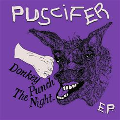

<!DOCTYPE html>
<html language="US-style English">
  <head>
    <meta charset="utf-8">
    <meta name="description" content="A Bohemian Rhapsody ala PUSCIFER">
    <meta name="author" content="Author: Dayna Groendyke">
    <meta name="keywords" content="Puscifer, Tool, A Perfect Circle, Caduceus, Maynard James Keenan, Prog. Rock, Progressive Rock, Experimental, Alternative-rock, Industrial">
    <meta name="viewport" content="width=device-width, initial-scale=1.0">
    <title>A Bohemian Rhapsody ala PUSCIFER, Music Video</title>
    <style>
      body {text-align: center;}
        .container {
          width: 600px;
          margin: auto;
          padding: 20px;
          border: 1px solid black;}
        .lyrics p, pre {
          font-family: arial;
          font-size: small;}
        .contact {background-color: powderblue;}
    </style>
  </head>
</html>

<div id="art" class="album-art">
  <h1 class="page-title" style="display:inline;">A Bohemian Rhapsody ala PUSCIFER</h1>
  <br>
  
</div>
<div id="audio" class="audio">
  <h3>Audio ONLY</h3>
</div>
<div id="video" class="audio-visual">
  <h3>This is serious stuff here. Don't you dare smile.</h3>
  <iframe width="560" height="315"
          src="https://www.youtube.com/embed/LjCu0UwDMNM"
          frameborder="0" allow="autoplay; encrypted-media"
          allowfullscreen>
  </iframe>
</div>
<div id="lyrics" class="lyrics-text">
  <h2>Lyrics to Puscifer - Bohemian Rhapsody (O.G. Mix)</h2>
    <p>Is this the real life?
Is this just fantasy?
<br>
Caught in a landslide
<br>
No escape from reality
<br>
Open your eyes
<br>
Look up to the skies and see
<br>
I'm just a poor boy, I need no sympathy
<br>
Because I'm easy come, easy go
<br>
Little high, little low
<br>
Anyway the wind blows, doesn't really matter to me
<br>
To me
<br>
Mama, just killed a man
<br>
Put a gun against his head
<br>
Pulled my trigger, now he's dead
<br>
Mama, life had just begun
<br>
But now I've gone and thrown it all away
<br>
Mama, oooooooooo
<br>
Didn't mean to make you cry
<br>
If I'm not back again this time tomorrow
<br>
Carry on, carry on, as if nothing really matters
<br>
Too late, my time has come
<br>
Sends shivers down my spine
<br>
Body's aching all the time
<br>
Goodbye everybody, I've got to go
<br>
Gotta leave you all behind and face the truth
<br>
Mama, ooooooooooh (Any way the wind blows)
<br>
I don't wanna die
<br>
I sometimes wish I'd never been born at all
<br>
I see a little silhouetto of a man
<br>
Scaramouch, scaramouch will you do the Fandango
<br>
Thunderbolt and lightning - very very frightening me
<br>
Galileo, Galileo
<br>
Galileo, Galileo
<br>
Galileo figaro
<br>
Magnifico (oh, oh, oh, oh! )
<br>
I'm just a poor boy, nobody loves me
<br>
He's just a poor boy from a poor family
<br>
Spare him his life from this monstrosity
<br>
Easy come easy go, will you let me go
<br>
Bismillah! No, we will not let you go - let him go
<br>
Bismillah! We will not let you go - let him go
<br>
Bismillah! We will not let you go - let me go
<br>
Will not let you go - let me go - (Never, never, never, never, never let me go! )
<br>
Will not let you go - let me go, oh, oh, oh, oh -
<br>
No, no, no, no, no, no, no -
<br>
Oh, Mama Mia, Mama Mia, Mama Mia, let me go -
<br>
Beelzebub has a devil put aside for me -
<br>
For me
<br>
For me!
<br>
So you think you can stone me and spit in my eye
<br>
So you think you can love me and leave me to die
<br>
Oh Baby, can't do this to me baby
<br>
Just gotta get out, just gotta get right out of here
<br>
Ooo, ooo yeah
<br>
Ooo yeah
<br>
Nothing really matters,
<br>
Anyone can see,
<br>
Nothing really matters, nothing really matters to me,
<br>
Any way the wind blows...</p>
</div>
<div id="copyright" class="contact">
  <h6>About this page</h6>
  <p>&#169;
  </p>
  <p>This webpage was produced for the class Introduction to Web Design & Development with the University of Montana, School of Media Arts.
  <video src="./media/mart-logo-animated.mp4" poster="./media/mart-logo-poster.jpg" width="840" height="500" preload controls="auto"> </video></p>
<br>
  Address: University of Montana
    School of Media Arts, McGill Hall Rm 224
    32 Campus Dr
    Missoula, MT 59812
    <br>

  Google Map
  <br>
</div>
